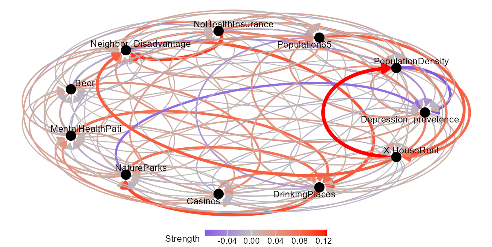

Install and load R packages
if (!requireNamespace("devtools")) {
install.packages("devtools")
}
devtools::install_github("stscl/cisp",
build_vignettes = TRUE,
dep = TRUE)Spatial pattern correlation
Using the same data as the gdverse idsa vignette:
depression = system.file('extdata/Depression.csv',package = 'gdverse') |>
readr::read_csv() |>
sf::st_as_sf(coords = c('X','Y'), crs = 4326)
## Rows: 1072 Columns: 13
## ── Column specification ───────────────────────────────────────────────────────────────────────────
## Delimiter: ","
## dbl (13): X, Y, Depression_prevelence, PopulationDensity, Population65, NoHealthInsurance, Neig...
##
## ℹ Use `spec()` to retrieve the full column specification for this data.
## ℹ Specify the column types or set `show_col_types = FALSE` to quiet this message.
depression
## Simple feature collection with 1072 features and 11 fields
## Geometry type: POINT
## Dimension: XY
## Bounding box: xmin: -83.1795 ymin: 32.11464 xmax: -78.6023 ymax: 35.17354
## Geodetic CRS: WGS 84
## # A tibble: 1,072 × 12
## Depression_prevelence PopulationDensity Population65 NoHealthInsurance Neighbor_Disadvantage
## * <dbl> <dbl> <dbl> <dbl> <dbl>
## 1 23.1 61.5 22.5 7.98 -0.0525
## 2 22.8 58.3 16.8 11.0 -0.254
## 3 23.2 35.9 24.5 9.31 -0.0540
## 4 21.8 76.1 21.8 13.2 0.0731
## 5 20.7 47.3 22.0 11 0.763
## 6 21.3 32.5 19.2 13.0 0.422
## 7 22 36.9 19.2 10.8 0.113
## 8 21.2 61.5 15.9 8.57 -0.154
## 9 22.7 67.2 15.7 17.8 -0.320
## 10 20.6 254. 11.3 12.7 0.457
## # ℹ 1,062 more rows
## # ℹ 7 more variables: Beer <dbl>, MentalHealthPati <dbl>, NatureParks <dbl>, Casinos <dbl>,
## # DrinkingPlaces <dbl>, X.HouseRent <dbl>, geometry <POINT [°]>
system.time({
g = cisp::spc(depression,cores = 12)
})
## user system elapsed
## 5.84 1.20 2081.24
g
## *** Spatial Pattern Correlation
##
## | yv | xv | correlation |
## |:---------------------:|:---------------------:|:-------------:|
## | Depression_prevelence | PopulationDensity | 4.613992e-02 |
## | Depression_prevelence | Population65 | 4.150478e-02 |
## | Depression_prevelence | Neighbor_Disadvantage | 3.924159e-02 |
## | Depression_prevelence | DrinkingPlaces | 1.485115e-02 |
## | Depression_prevelence | NoHealthInsurance | 1.384179e-02 |
## | Depression_prevelence | NatureParks | 1.238754e-02 |
## | Depression_prevelence | MentalHealthPati | 1.041791e-02 |
## | Depression_prevelence | X.HouseRent | 7.768505e-03 |
## | Depression_prevelence | Beer | 1.914223e-03 |
## | Depression_prevelence | Casinos | -7.083083e-03 |
## | PopulationDensity | X.HouseRent | 7.832439e-02 |
## | PopulationDensity | MentalHealthPati | 1.587098e-02 |
## | PopulationDensity | DrinkingPlaces | 1.483815e-02 |
## | PopulationDensity | Population65 | 1.037345e-02 |
## | PopulationDensity | NoHealthInsurance | 6.187618e-03 |
## | PopulationDensity | NatureParks | 5.277059e-03 |
## | PopulationDensity | Beer | 1.149474e-03 |
## | PopulationDensity | Casinos | 1.075641e-03 |
## | PopulationDensity | Neighbor_Disadvantage | -5.290491e-03 |
## | PopulationDensity | Depression_prevelence | -7.737254e-02 |
## | Population65 | X.HouseRent | 8.942427e-02 |
## | Population65 | Neighbor_Disadvantage | 4.196298e-02 |
## | Population65 | PopulationDensity | 2.396500e-02 |
## | Population65 | Depression_prevelence | 2.230939e-02 |
## | Population65 | MentalHealthPati | 5.615720e-03 |
## | Population65 | DrinkingPlaces | 3.487904e-03 |
## | Population65 | NoHealthInsurance | 3.461840e-03 |
## | Population65 | Beer | -5.285474e-03 |
## | Population65 | NatureParks | -7.663094e-03 |
## | Population65 | Casinos | -9.763578e-03 |
## | NoHealthInsurance | Neighbor_Disadvantage | 1.105041e-01 |
## | NoHealthInsurance | X.HouseRent | 6.270303e-02 |
## | NoHealthInsurance | Population65 | 2.928277e-02 |
## | NoHealthInsurance | PopulationDensity | 2.298465e-02 |
## | NoHealthInsurance | DrinkingPlaces | 1.301730e-02 |
## | NoHealthInsurance | Casinos | 7.750685e-03 |
## | NoHealthInsurance | MentalHealthPati | 6.574109e-03 |
## | NoHealthInsurance | Beer | 4.335673e-03 |
## | NoHealthInsurance | NatureParks | 1.970191e-03 |
## | NoHealthInsurance | Depression_prevelence | -7.785626e-03 |
## | Neighbor_Disadvantage | DrinkingPlaces | 9.368817e-02 |
## | Neighbor_Disadvantage | NoHealthInsurance | 6.839594e-02 |
## | Neighbor_Disadvantage | X.HouseRent | 6.003962e-02 |
## | Neighbor_Disadvantage | NatureParks | 1.923556e-02 |
## | Neighbor_Disadvantage | Population65 | 1.866523e-02 |
## | Neighbor_Disadvantage | MentalHealthPati | 1.156848e-02 |
## | Neighbor_Disadvantage | Casinos | 5.412816e-03 |
## | Neighbor_Disadvantage | PopulationDensity | -3.565453e-03 |
## | Neighbor_Disadvantage | Depression_prevelence | -6.645998e-03 |
## | Neighbor_Disadvantage | Beer | -9.891279e-03 |
## | Beer | Casinos | 4.989166e-02 |
## | Beer | Population65 | 1.780223e-02 |
## | Beer | DrinkingPlaces | 1.468898e-02 |
## | Beer | NatureParks | 1.294840e-02 |
## | Beer | Neighbor_Disadvantage | 3.307984e-03 |
## | Beer | PopulationDensity | 2.113110e-03 |
## | Beer | MentalHealthPati | 1.609752e-03 |
## | Beer | X.HouseRent | -1.571509e-04 |
## | Beer | NoHealthInsurance | -3.058150e-03 |
## | Beer | Depression_prevelence | -3.498701e-02 |
## | MentalHealthPati | DrinkingPlaces | 7.589759e-02 |
## | MentalHealthPati | PopulationDensity | 3.784925e-02 |
## | MentalHealthPati | NatureParks | 3.207796e-02 |
## | MentalHealthPati | Neighbor_Disadvantage | 2.471292e-02 |
## | MentalHealthPati | Casinos | 2.460031e-02 |
## | MentalHealthPati | Beer | 1.056623e-02 |
## | MentalHealthPati | Population65 | 9.823873e-03 |
## | MentalHealthPati | X.HouseRent | 7.990203e-03 |
## | MentalHealthPati | Depression_prevelence | -1.048828e-02 |
## | MentalHealthPati | NoHealthInsurance | -1.680511e-02 |
## | NatureParks | DrinkingPlaces | 7.348625e-02 |
## | NatureParks | MentalHealthPati | 3.485657e-02 |
## | NatureParks | X.HouseRent | 2.806660e-02 |
## | NatureParks | Neighbor_Disadvantage | 2.704057e-02 |
## | NatureParks | PopulationDensity | 1.845508e-02 |
## | NatureParks | NoHealthInsurance | 1.688694e-02 |
## | NatureParks | Beer | 1.029185e-02 |
## | NatureParks | Casinos | 8.421471e-03 |
## | NatureParks | Population65 | -1.960554e-02 |
## | NatureParks | Depression_prevelence | -6.236815e-02 |
## | Casinos | DrinkingPlaces | 5.319214e-02 |
## | Casinos | Population65 | 3.493616e-02 |
## | Casinos | Beer | 2.487624e-02 |
## | Casinos | NatureParks | 1.989072e-02 |
## | Casinos | MentalHealthPati | 1.853764e-02 |
## | Casinos | Neighbor_Disadvantage | 2.927941e-03 |
## | Casinos | NoHealthInsurance | 8.801613e-05 |
## | Casinos | PopulationDensity | -2.072731e-03 |
## | Casinos | X.HouseRent | -8.640315e-03 |
## | Casinos | Depression_prevelence | -1.343536e-02 |
## | DrinkingPlaces | NatureParks | 1.000035e-01 |
## | DrinkingPlaces | MentalHealthPati | 4.481903e-02 |
## | DrinkingPlaces | PopulationDensity | 3.366277e-02 |
## | DrinkingPlaces | Casinos | 2.221974e-02 |
## | DrinkingPlaces | Beer | 1.329771e-02 |
## | DrinkingPlaces | NoHealthInsurance | 2.575281e-03 |
## | DrinkingPlaces | X.HouseRent | 1.852861e-03 |
## | DrinkingPlaces | Neighbor_Disadvantage | -3.999435e-03 |
## | DrinkingPlaces | Depression_prevelence | -1.161842e-02 |
## | DrinkingPlaces | Population65 | -3.072434e-02 |
## | X.HouseRent | PopulationDensity | 1.249357e-01 |
## | X.HouseRent | Neighbor_Disadvantage | 8.995114e-02 |
## | X.HouseRent | Population65 | 4.226893e-02 |
## | X.HouseRent | NoHealthInsurance | 1.481202e-02 |
## | X.HouseRent | DrinkingPlaces | 6.673956e-03 |
## | X.HouseRent | MentalHealthPati | -1.753068e-03 |
## | X.HouseRent | Casinos | -5.807954e-03 |
## | X.HouseRent | Depression_prevelence | -5.869152e-03 |
## | X.HouseRent | Beer | -6.924018e-03 |
## | X.HouseRent | NatureParks | -1.046909e-02 |
plot(g)

Figure 1. Results of Spatial
pattern correlation